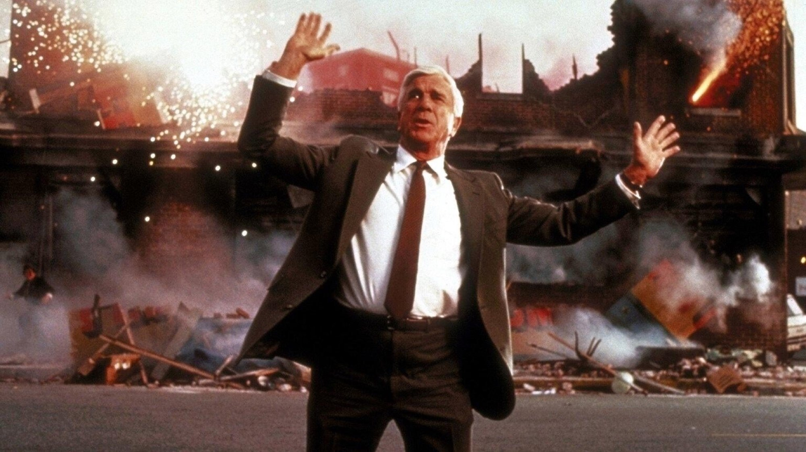
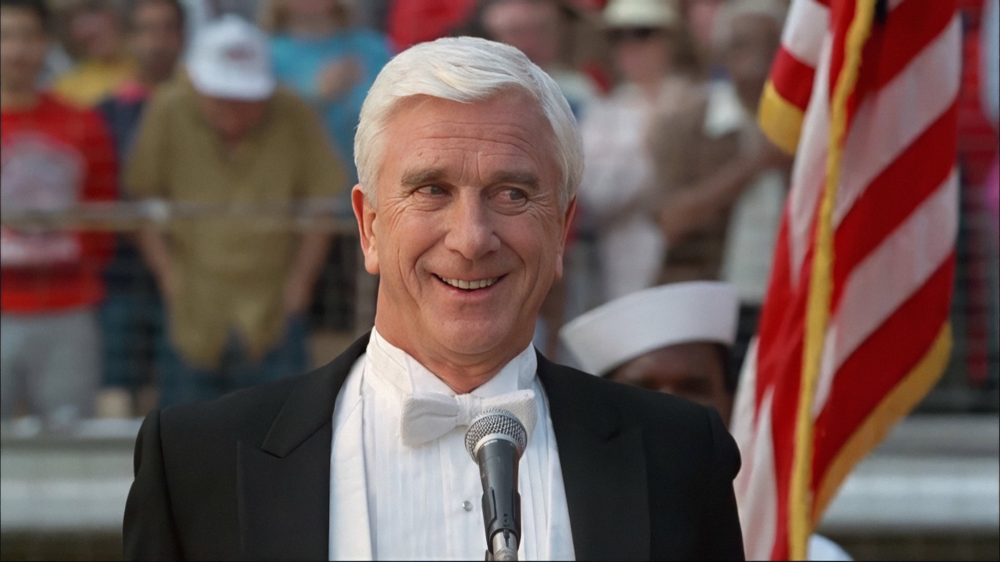
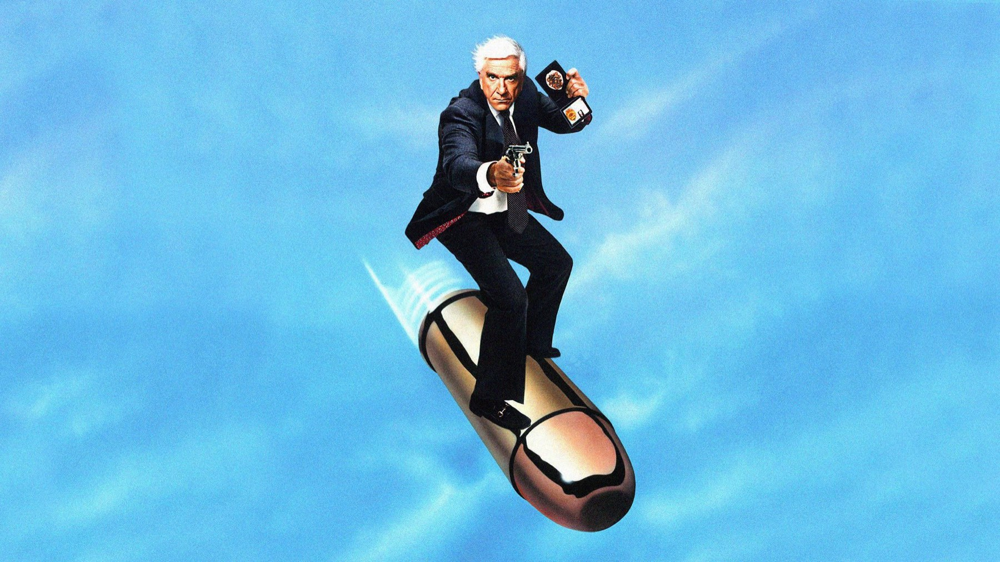

Una pallottola spuntata nacque da una serie cancellata
Sei episodi televisivi, un ospite ucciso nella sigla e un attore drammatico che scoprì la commedia
Sei puntate e poi la rete spense tutto. Quella serie, andata in onda nel 1982, sembrava un incidente di percorso, eppure da lì partì una delle commedie più amate di sempre: Una pallottola spuntata, dove il tenente Frank Drebin, con la faccia di Leslie Nielsen, attraversa il caos senza accorgersi di niente.
Una serie nata da un ripiego
Dopo il successo di L'aereo più pazzo del mondo, gli stessi autori volevano un'altra parodia da portare al cinema. Partirono dalla vecchia serie poliziesca M Squad, ma non riuscirono a trovare una trama. Allora Michael Eisner, della Paramount, propose loro un contratto per sei episodi televisivi, benché puntassero al grande schermo. Nacque così Police Squad!, pensata per prendere in giro i polizieschi come il loro lavoro precedente aveva preso in giro i disaster movie. Però la ABC la cancellò dopo sei episodi, quindi la storia sembrava chiusa. Per noi è un piccolo paradosso: un fallimento televisivo diventò la fabbrica di un successo al cinema.
Quando ripartirono da quel personaggio, si accorsero che una storia d'amore dava finalmente al soggetto una trama, e la Paramount approvò il progetto in fretta. Infatti molte trovate dello show passarono nei lungometraggi, perciò il debito con la televisione non è un dettaglio da specialisti, ma la base su cui tutto si regge.

L'ospite speciale ucciso nella sigla
Ogni puntata apriva con una trovata crudele: l'ospite speciale veniva presentato e subito ucciso, ancora dentro i titoli di testa. John Belushi ne avrebbe fatto parte in un episodio, ma morì poco prima della messa in onda, e la sua scena non andò in onda. Il gioco della sigla dice molto del tono. Lo spettacolo non strizzava l'occhio a chi guardava, ma lo lasciava scoprire da solo, e il cinema fece lo stesso con più mezzi e con la stessa faccia impassibile.
Un attore drammatico che scoprì la commedia
Nielsen aveva cominciato in televisione, nell'epoca d'oro dei drammi in diretta, e nel 1956 aveva debuttato sul grande schermo con Il re vagabondo, un musical che si rivelò un fiasco. Per anni fece il bello e serio, poi nel 1980 la parodia sui disastri aerei segnò il suo passaggio alla commedia impassibile. Il suo mestiere divenne interpretare personaggi che non notano l'assurdo attorno a sé e, anzi, lo assecondano. Drebin ne è la prova: parodia i poliziotti seri che Nielsen aveva interpretato in tv, per esempio in The Bold Ones: The Protectors, nel 1969.
Gli autori cercavano inoltre attori mai visti in commedia, perché recitassero seri accanto a lui. Ma l'idea regge solo se il protagonista non ammicca mai: basterebbe uno sguardo in macchina e il meccanismo si romperebbe. Perciò il titolo è meno una raccolta di battute e più un esercizio di faccia tosta.

Come arrivò in Italia
Da noi il lungometraggio uscì prima dello show televisivo. Quando la televisione italiana trasmise la serie, scelse il titolo Quelli della pallottola spuntata per richiamare il successo del cinema. A Frank Drebin diede il timbro Sergio Rossi, che doppiò Nielsen sia in tv sia nei tre capitoli, mentre a Nordberg prestò la voce Tonino Accolla. Per noi è il motivo per cui Drebin ha in italiano un solo timbro, ovunque lo si incontri, e non è scontato in un doppiaggio nato a distanza di anni.
Il successo e il quarto capitolo
Nel primo fine settimana negli Stati Uniti e in Canada la commedia arrivò al primo posto con 9,3 milioni di dollari, e alla fine in Nord America toccò circa 78,8 milioni. Roger Ebert, sul Chicago Sun-Times, le diede tre stelle e mezzo su quattro e scrisse che si ride e poi ci si prende in giro per aver riso. Seguirono due sequel, uno nel 1991 e l'altro nel 1994, mentre nel 2025 è uscito un quarto capitolo con Liam Neeson, che interpreta il figlio di Drebin.
Guardatelo sapendo che nacque da una serie cancellata e che il suo segreto è la faccia seria di Nielsen. Oggi si trova su Paramount+ e in noleggio su Apple TV e Amazon, al momento della pubblicazione. A voi la domanda: Drebin è più divertente quando sbaglia tutto o quando non si accorge di niente?
Domande frequenti
Da cosa nasce Una pallottola spuntata?
Da una serie cancellata dopo sei episodi, con gli stessi autori e Leslie Nielsen come protagonista.
Chi doppia Leslie Nielsen in italiano?
Sergio Rossi lo doppiò sia in tv sia nei tre capitoli.
Come si chiama la serie in Italia?
Quelli della pallottola spuntata, titolo scelto per richiamare il cinema.
Dove si vede Una pallottola spuntata in Italia?
Su Paramount+ e in noleggio su Apple TV e Amazon, al momento della pubblicazione.
Fonti consultate (10)
- Wikipedia – The Naked Gun: From the Files of Police Squad!
- Wikipedia – Una pallottola spuntata
- Wikipedia – Police Squad!
- Wikipedia – Quelli della pallottola spuntata
- Wikipedia – Leslie Nielsen
- Wikipedia – Leslie Nielsen (it)
- Wikipedia – John Belushi
- Wikipedia – Sergio Rossi (attore)
- Wikipedia – Tonino Accolla
- TMDB – scheda e dove vederlo in Italia